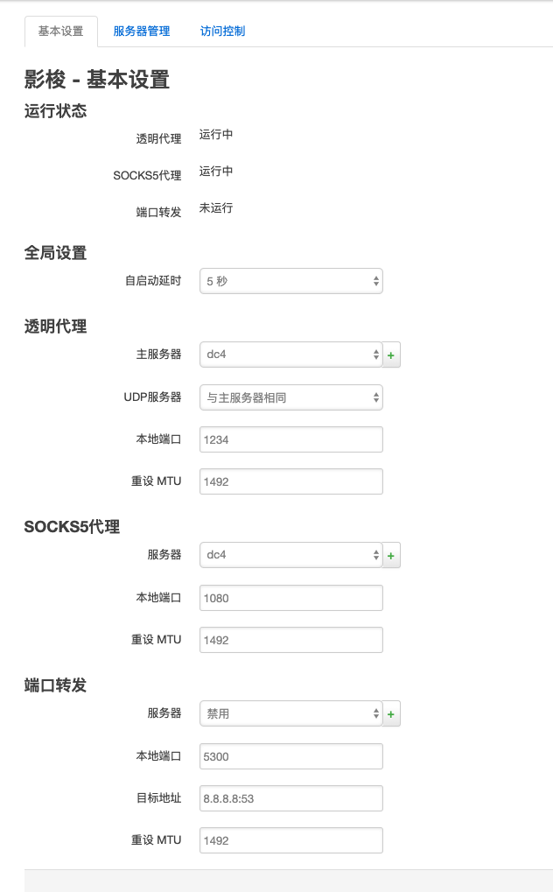
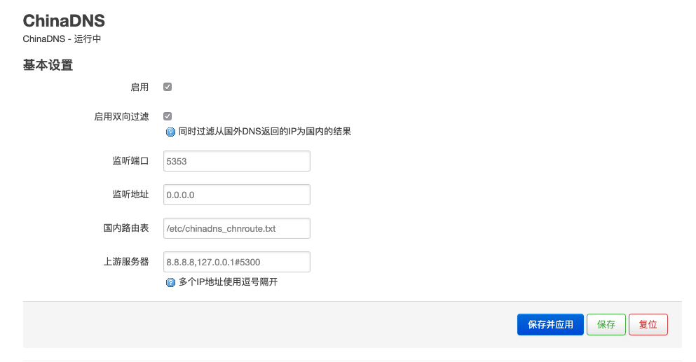
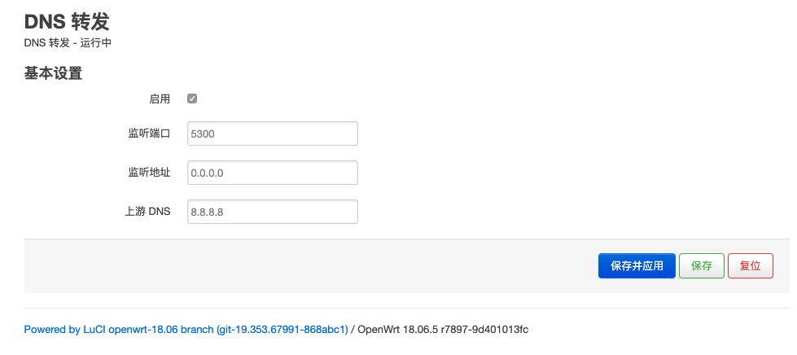
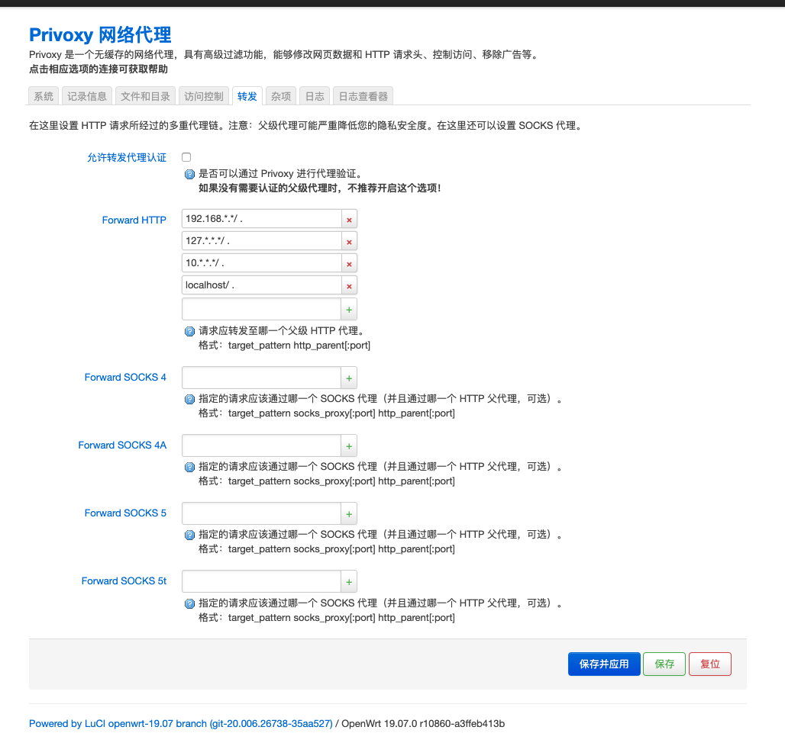
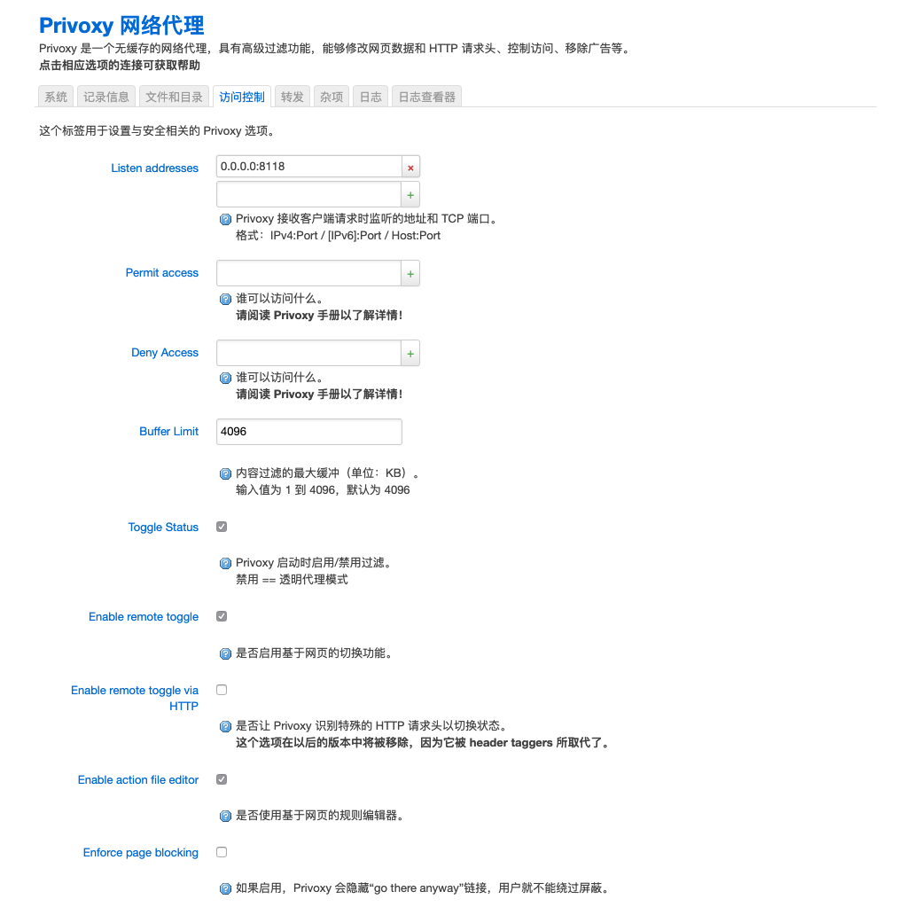
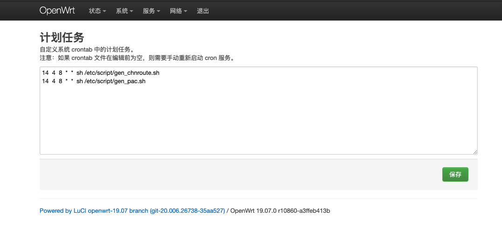
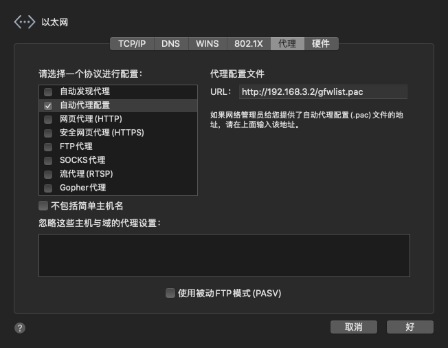

openwrt之shadowsock做PAC代理
安装配置shadowsocks+ChinaDNS+dns-forwarder
添加软件源
- 添加证书
1 | wget http://openwrt-dist.sourceforge.net/openwrt-dist.pub |
- 编辑
/etc/opkg/customfeeds.conf,添加软件源
1 | src/gz openwrt_dist http://openwrt-dist.sourceforge.net/packages/base/x86_64 |
在线安装
1 | opkg update |
离线安装
1 | opkg update |
配置shadowsocks
添加服务器
设置

访问控制

配置ChinaDNS

配置dns-forwarder

安装配置HTTP代理privoxy(可选)
安装
1 | opkg install privoxy |
配置 方式一（注意先，先配置好再启动）


配置 方式二
编辑/etc/config/privoxy
1 | config privoxy 'privoxy' |
配置PAC文件
安装pip
1 | opkg install python3-pip |
安装genpac
1 | pip install genpac |
生成SOCKS5代理方式
1 | genpac --proxy="SOCKS5 192.168.3.2:1080" --gfwlist-proxy="SOCKS5 192.168.3.2:1080" -o /www/gfwlist.pac |
生成HTTP代理方式
1 | genpac --proxy="SOCKS5 192.168.3.2:1080" --gfwlist-proxy="PROXY 192.168.3.2:8118" -o /www/gfwlist.pac |
自动更新配置
新建脚本
/etc/script/gen_pac.sh
1 | /usr/bin/genpac --proxy="SOCKS5 192.168.3.2:1080" --gfwlist-proxy="SOCKS5 192.168.3.2:1080" -o /www/gfwlist.pac |
/etc/script/gen_chnroute.sh
1 | /bin/wget -O- 'http://ftp.apnic.net/apnic/stats/apnic/delegated-apnic-latest' | awk -F\| '/CN\|ipv4/ { printf("%s/%d\n", $4, 32-log($5)/log(2)) }' > /etc/chinadns_chnroute.txt |
更改权限
系统 >> 计划任务
1 | chmod +x /etc/script/gen_pac.sh |
添加定时任务
1 | 14 4 8 * * sh /etc/script/gen_chnroute.sh |

使用
macos系统

参考文献
本博客所有文章除特别声明外，均采用 CC BY-NC-SA 4.0 许可协议。转载请注明来源 Maktub_Blog！
相关推荐

2020-01-11
openwrt之安装配置
环境 MACOS 10.15 ESXI 6.7 准备镜像文件转换12brew install qemuqemu-img convert -f raw -O vmdk ~/Downloads/openwrt-19.07.0-x86-64-combined-ext4.img openwrt-19.07.0-x86-64-combined-ext4.vmdk Esxi镜像转换 上传文件 转换 1vmkfstools -i openwrt-19.07.0-x86-64-combined-ext4.vmdk openwrt.vmdk -d thin 安装创建虚拟机 配置作为旁路由设置IP 修改/etc/config/network 重启网络 1/etc/init.d/network reload 登陆系统后配置网络 如果作为旁路由，请关闭DHCP 更新软件包列表1opkg update 安装中文包12opkg install luci-i18n-base-zh-cnopkg install luci-i18n-firewall-zh-cn 参考文献 OpenWr...

2020-04-12
openwrt之shadowsock服务器搭建
环境 debian10 shadowsocks-libev 安装官方源安装12sudo apt updatesudo apt install shadowsocks-libev 官方源最新版本安装 添加软件源，编辑/etc/apt/sources.list，添加： 1deb http://deb.debian.org/debian buster-backports main 安装 12sudo apt updatesudo apt-get -t buster-backports install "shadowsocks-libev" 配置 编辑配置文件 /etc/shadowsocks-libev/ssconfig.json 1234567891011{ "server":["::1", "0.0.0.0"], "mode":"tcp_and_udp", "port_password": {...

2020-01-11
openwrt之zerotier异地组网
安装1opkg install zerotier 配置zerotier编辑/etc/config/zerotier12345config zerotier sample_config option enabled 1 option config_path '/etc/zerotier' option secret '' list join '填入自己网络id' 启动服务12mkdir /etc/zerotier/etc/init.d/zerotier start 开机启动1/etc/init.d/zerotier enable openwrt添加网络接口 配置zerotier 登陆zerotier，配置ip 配置zerotier路由(本人用的是192.168.9.100，请自行更改ip) 配置openwrt防火墙 添加基本防火墙设置 添加自定义规则 123iptables -I FORWARD -i ztr2qvners -j ACCEPTipta...